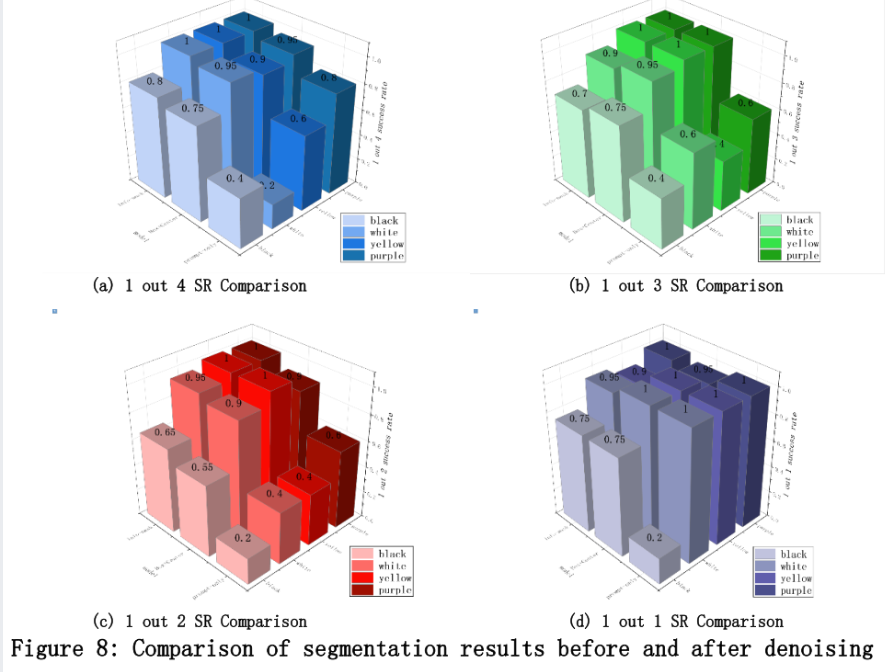
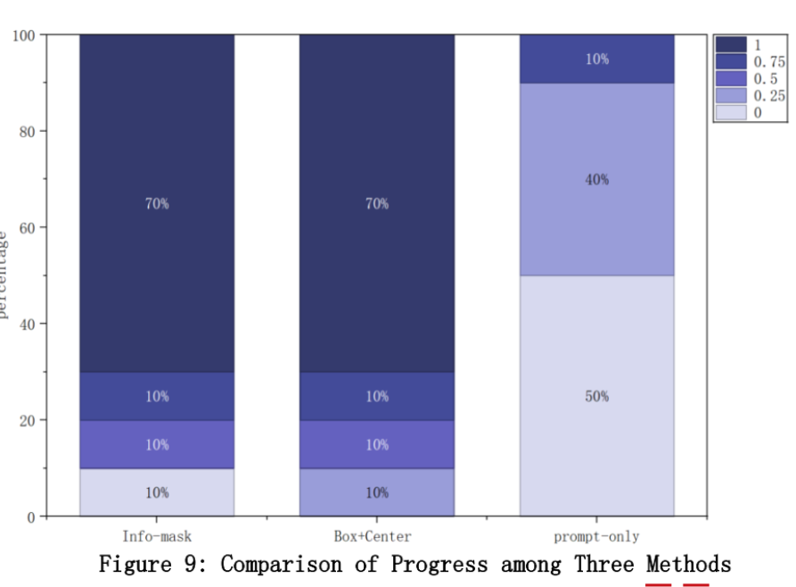

Goal-Conditioned VLA Based on pi_0.5
Developed a goal-conditioned robotic grasping system combining YOLO11-Seg with the pi_0.5 VLA model. Resolved the VLA model's high sensitivity to text prompts by introducing an explicit visual anchoring mechanism, significantly boosting grasping reliability on a physical FR3 robot.
Demonstrations
Reliable grasping across objects and viewpoints
Results
Segmentation and progress comparison


System
Goal-conditioned grasping architecture